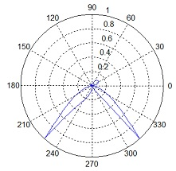

The spectrum class
Scattering spectra and radiative lifetimes of dipoles are internally computed by using the asymptotic far fields. For calculating emission patterns or obtaining images of the emitting structures, it is occasionally helpful to directly access the spectrum classes.
Contents
Initialization
% initialize SPECTRUM object with unit sphere at infinity spec = spectrum( pinfty, op, PropertyName, PropertyValue ); % initialize SPECTRUM object with light propagation direction spec = spectrum( dir, op, PropertyName, PropertyValue );
In the initialization, the following parameters and additional properties are used
- pinfty is a user-defined unit-sphere discretization for the computation of the electromagnetic fields at infinity.
- dir is an array for light propagation directions at infinity.
- 'medium' selects a medium for the far fields, on default we set medium=1.
Either pinfty.nvec or dir give the directions along which the far fields are computed. spectrum is a wrapper function that selects from the options and property settings one of several classes.
Methods
Once the spectrum object is initialized, one can compute from the surface charges sig returned by the BEM solvers the scattered fields in the far zone
% compute electromagnetic fields in the far zone
f = farfield( spec, sig );
f is a compstruct object with the fields e and h for the electric and magnetic fields. The spectrum object can be also used for dipole objects to compute the dipole far fields
% compute far fields of dipole object DIP
f = farfield( dip, spec, enei );
Examples
We first show how to compute the far fields for a dipole located between a nanosphere and a substrate, using a quasistatic simulation
% table of dielectric functions epstab = { epsconst( 1 ), epstable( 'gold.dat' ), epsconst( 2.25 ) }; % set up layer structure layer = layerstructure( epstab, [ 1, 3 ], 0 ); % options for BEM simulation op = bemoptions( 'sim', 'stat', 'interp', 'curv' , 'layer', layer ); % set up COMPARTICLE objec p = comparticle( epstab, { shift( trisphere( 256, 4 ), [ 0, 0, 3 ] ) }, [ 2, 1 ], 1, op ); % wavelength of dipole excitation enei = 550; % dipole excitation with dipole moment along z dip = dipole( compoint( p, [ 1, 0, 0.5 ], op ), [ 0, 0, 1 ], op ); % set up BEM solver bem = bemsolver( p, op ); % surface charge sig = bem \ dip( p, enei ); % angles theta = reshape( linspace( 0, 2 * pi, 301 ), [], 1 ); % directions for emission dir = [ cos( theta ), 0 * theta, sin( theta ) ]; % set up spectrum object spec = spectrum( dir, op ); % farfield radiation f = farfield( spec, sig ) + farfield( dip, spec, enei ); % norm of Poynting vector s = vecnorm( 0.5 * real( cross( f.e, conj( f.h ), 2 ) ) ); % radiation pattern polar( theta, s / max( s ) );

With the same simulation, we can also get a three-dimensional emission pattern
% sphere at infinity pinfty = trispheresegment( linspace( 0, 2 * pi, 51 ), linspace( 0, pi, 51 ) ); % set up spectrum object spec = spectrum( pinfty, op ); % farfield radiation f = farfield( spec, sig ) + farfield( dip, spec, enei ); % norm of Poynting vector s = vecnorm( 0.5 * real( cross( f.e, conj( f.h ), 2 ) ) ); % radiation pattern plot( trispherescale( spec.pinfty, s ), s );

Copyright 2017 Ulrich Hohenester